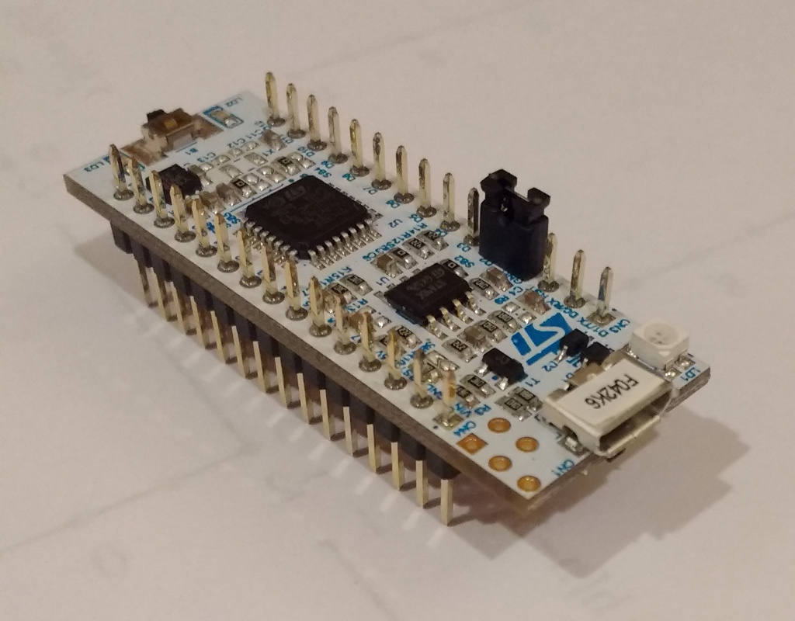

This is one of a series of posts in which I will describe my experiences writing bare-metal code for the Nucleo-F042K6 microcontroller. My goal is to write a small programming language or operating system for the board as a way of sharpening my low-level programming skills.
As part of my plan to design and build a computer from the CPU design to the OS userspace, I've been looking into learning assembly and systems programming. My interest in these fields was redoubled when I took ECE371 (page 151) during the fall term of 2016. Taught by the energetic Doug Hall, Microprocessors 1 helped me get over my fear of assembly, made me comfortable with interrupts, and gave me a much clearer idea of exactly how one would begin to write an operating system.
The primary focus of ECE371 was embedded development. Instead of running assembly in a hosted x86 environment, we wrote baremetal code that ran on the BeagleBone Blacks in PSU's Tektronix lab. Because we had no OS with which we could load our code onto the BBB's, we used a JTAG debugger from TI that interfaced with an Eclipse-based software package called CodeComposer Studio. CCS was very prone to crashing, both on my laptop and on the Teklab machines, and so I soon began looking for ways to program the BBB from the command line.
After a bit of searching, I found an open-source piece of software called OpenOCD. Hypothetically, I could connect TI's JTAG debugger to a computer running an OpenOCD server, connect to the server using either telnet or GDB, and upload code to the BBB and debug it. After unsuccessfully fiddling with it for a while, I found a forum post online that claimed that OpenOCD didn't support that debugger. After a bit of poking around, I found Tin Can Tools' Flyswatter2, which explicitly advertised support for OpenOCD. I ordered one, and it arrived a few weeks later.
Unfortunately, while OpenOCD appeared to be able to debug code with the Flyswatter2, I was not ever able to flash code using it. In CCS, hitting a single button took a binary stored on your hard disk, uploaded it to the BBB's RAM, reset the core (or maybe did those things in the opposite order, who knows), and ran the code. With OpenOCD and the Flyswatter2, the only way that I was able to do anything close to this was by configuring the BBB to network boot by pulling an image from my development machine. This was an ugly and inefficient setup, and it never completely worked right; I wasn't able to actually debug code even after uploading it.
At that point, I gave up on the BeagleBone Black. I knew that there were much better baremetal development environments that I could get set up with, and I was tired of being told by various internet denizens that I should just use CCS. I knew that one of the CS students at PSU, RJ Russell had been working on writing an operating system in Rust for a little microcontroller with an ARM core, so I asked him about it. He then introduced me to the Nucleo-F042K6:

The development cycle was all that I wanted: programming, flashing and debugging all from a command-line interface with a short learning curve. The hardware was even better, with a $12-ish price tag and integrated debugging and serial connections. I bought one instantly and waited an agonizing week for it to arrive.
Now it's here, and the real fun begins...
My main use for the Nucleo is learning. With it, I can write and debug baremetal code very very quickly, without the use of an emulator, and with the potential to affect the outside world. 6 KB of SRAM is not a lot, but it's enough to hold a tiny Forth or maybe a small audio synthesizer. This is a device that I can use to learn about assembly, linking, loading, memory maps, interrupts, timers, I2C, UART, operating system and programming language design, and whatever else I can fit into six thousand bytes.
And as for you, dear reader, you may very well learn something yourself. I intend to document everything I do with this little board (whose appeal as a tiny computer is only surpassed by that of the ATtiny4), in hopes that you might benefit from my adventures.
Unfortunately, I won't be able to do anything with the Nucleo until the term ends; Portland State's engineering program is threatening to crush me if I take my focus away from it for more than a second. The term ends in three weeks, at which point I'll be free to start loading code onto the Nucleo.
Until then, my friends...